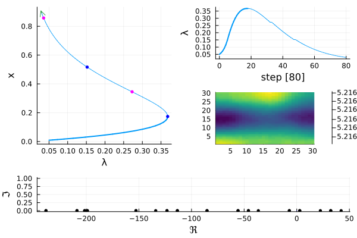
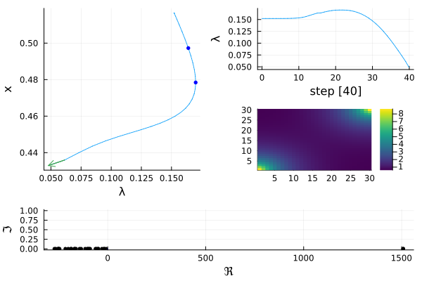
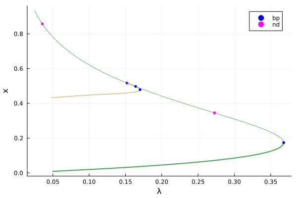
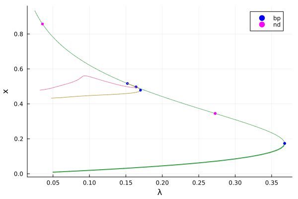
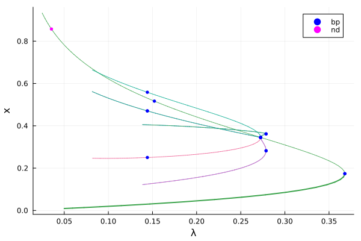
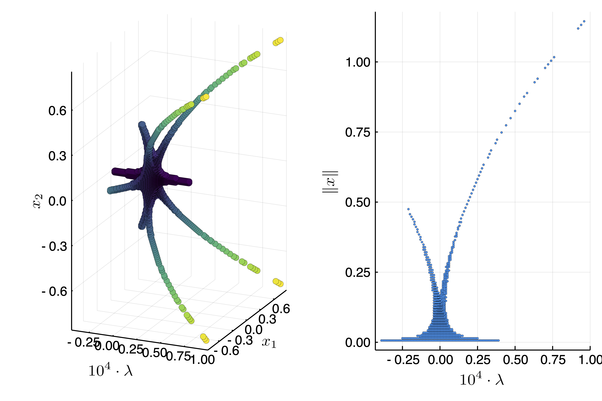
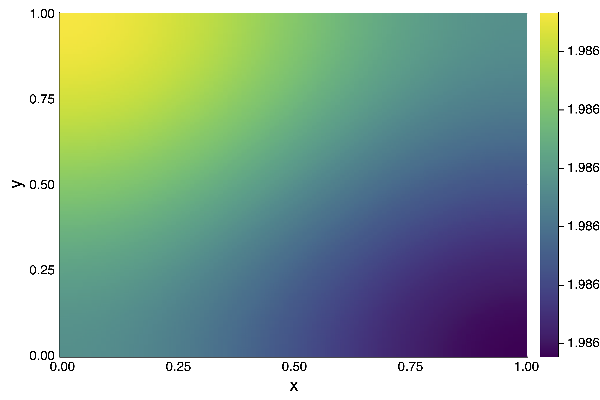
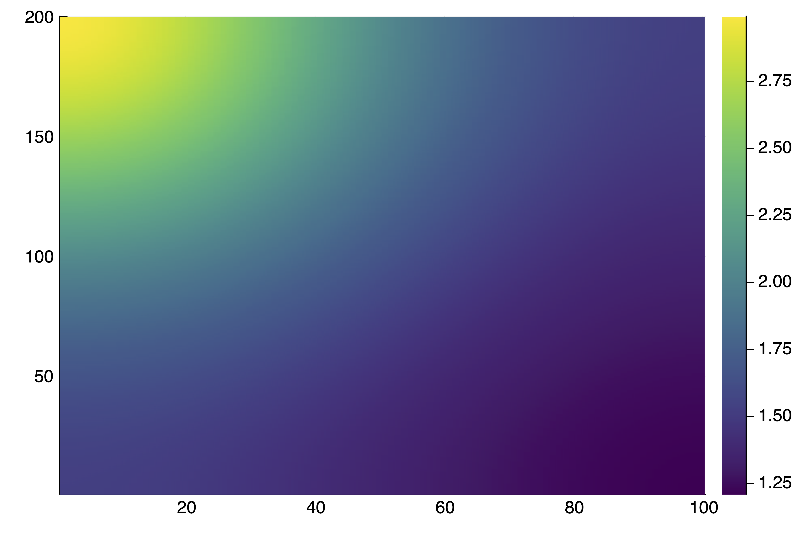
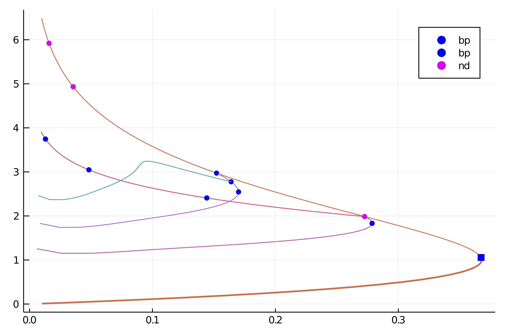

🟤 2d generalized Bratu–Gelfand problem
We consider the problem of Mittelmann [Farrell] [Wouters]:
\[\Delta u + NL(\lambda,u) = 0\]
with Neumann boundary condition on $\Omega = (0,1)^2$ and where $NL(\lambda,u)\equiv-10(u-\lambda e^u)$. This is a good example to show how automatic branch switching works and also nonlinear deflation.
We start with some imports:
using Revise, ForwardDiffusing BifurcationKit, LinearAlgebra, Plots, SparseArraysconst BK = BifurcationKit# define the sup norm and a L2 normnormbratu(x) = norm(x .* w) / sqrt(length(x)) # the weight w is defined below# some plotting functions to simplify our lifeplotsol!(x, nx = Nx, ny = Ny; kwargs...) = heatmap!(reshape(x, nx, ny); color = :viridis, kwargs...)plotsol(x, nx = Nx, ny = Ny; kwargs...) = (plot();plotsol!(x, nx, ny; kwargs...))and with the discretization of the problem
function Laplacian2D(Nx, Ny, lx, ly) hx = 2lx/Nx hy = 2ly/Ny D2x = spdiagm(0 => -2ones(Nx), 1 => ones(Nx-1), -1 => ones(Nx-1) ) / hx^2 D2y = spdiagm(0 => -2ones(Ny), 1 => ones(Ny-1), -1 => ones(Ny-1) ) / hy^2 D2x[1,1] = -1/hx^2 D2x[end,end] = -1/hx^2 D2y[1,1] = -1/hy^2 D2y[end,end] = -1/hy^2 D2xsp = sparse(D2x) D2ysp = sparse(D2y) A = kron(sparse(I, Ny, Ny), D2xsp) + kron(D2ysp, sparse(I, Nx, Nx)) return A, D2xendϕ(u, λ) = -10(u-λ*exp(u))dϕ(u, λ) = -10(1-λ*exp(u))function Fmit!(f, u, p) mul!(f, p.Δ, u) f .= f .+ ϕ.(u, p.λ) return fendIt will also prove useful to have the derivatives of our functional:
function JFmit(x,p) J = p.Δ dg = dϕ.(x, p.λ) return J + spdiagm(0 => dg)endWe need to define the parameters associated to this problem:
Nx = 30; Ny = 30lx = 0.5; ly = 0.5# weight for the weighted normconst w = (lx .+ LinRange(-lx,lx,Nx)) * (LinRange(-ly,ly,Ny))' |> vecΔ, = Laplacian2D(Nx, Ny, lx, ly)par_mit = (λ = .05, Δ = Δ)# initial guess f for newtonsol0 = zeros(Nx, Ny) |> vec# Bifurcation Problemprob = BifurcationProblem(Fmit!, sol0, par_mit, (@optic _.λ),; J = JFmit, record_from_solution = (x, p; k...) -> (x = normbratu(x), n2 = norm(x), n∞ = norminf(x)), plot_solution = (x, p; k...) -> plotsol!(x ; k...))To compute the eigenvalues, we opt for the shift-invert strategy with shift =0.5
# eigensolvereigls = EigArpack()# options for Newton solver, we pass the eigen solveropt_newton = BK.NewtonPar(tol = 1e-8, eigsolver = eigls, max_iterations = 20)# options for continuationopts_br = ContinuationPar(p_max = 3.5, p_min = 0.025, # for a good looking curve dsmin = 0.001, dsmax = 0.05, ds = 0.01, # number of eigenvalues to compute nev = 30, newton_options = (@set opt_newton.verbose = false), tol_stability = 1e-6, # detect codim 1 bifurcations detect_bifurcation = 3, # Optional: bisection options for locating bifurcations n_inversion = 4, dsmin_bisection = 1e-7, max_bisection_steps = 25)Note that we put the option detect_bifurcation = 3 to detect bifurcations precisely with a bisection method. Indeed, we need to locate these branch points precisely to be able to call automatic branch switching.
Branch of homogeneous solutions
At this stage, we note that the problem has a curve of homogeneous (constant in space) solutions $u_h$ solving $N(\lambda, u_h)=0$. We shall compute this branch now.
Given that we will use these arguments for continuation many times, it is wise to collect them:
# optional arguments for continuationkwargsC = (verbosity = 0, plot = true, normC = norminf)We call continuation with the initial guess sol0 which is homogeneous, thereby generating homogeneous solutions:
br = continuation(prob, PALC(), opts_br; kwargsC...)show(br)GKS: Possible loss of precision in routine SET_WINDOW
GKS: Rectangle definition is invalid in routine CELLARRAY
GKS: Rectangle definition is invalid in routine CELLARRAY
GKS: Rectangle definition is invalid in routine CELLARRAY
GKS: Rectangle definition is invalid in routine CELLARRAY
GKS: Rectangle definition is invalid in routine CELLARRAY
GKS: Rectangle definition is invalid in routine CELLARRAY
GKS: Rectangle definition is invalid in routine CELLARRAY
GKS: Rectangle definition is invalid in routine CELLARRAY
┌─ Curve type: EquilibriumCont
├─ Number of points: 84
├─ Type of vectors: Vector{Float64}
├─ Parameter λ starts at 0.05, ends at 0.025
├─ Algo: PALC [Secant]
└─ Special points:
- # 1, bp at λ ≈ +0.36787944 ∈ (+0.36787944, +0.36787944), |δp|=2e-10, [converged], δ = ( 1, 0), step = 18
- # 2, nd at λ ≈ +0.27255474 ∈ (+0.27255474, +0.27255937), |δp|=5e-06, [converged], δ = ( 2, 0), step = 33
- # 3, bp at λ ≈ +0.15215124 ∈ (+0.15215124, +0.15215818), |δp|=7e-06, [converged], δ = ( 1, 0), step = 48
- # 4, nd at λ ≈ +0.03551852 ∈ (+0.03551852, +0.03554981), |δp|=3e-05, [converged], δ = ( 2, 0), step = 76
- # 5, endpoint at λ ≈ +0.02500000, step = 83You should see the following result:
title!("")
We note several simple bifurcation points for which the dimension of the kernel of the jacobian is one dimensional. In the above box, δ = ( 1, 0) gives the change in the stability. In this case, there is one vector in the kernel which is real. The bifurcation point 2 has a 2d kernel and is thus not amenable to automatic branch switching.
Automatic branch switching at simple branch points
We can compute the branch off the third bifurcation point:
br1 = continuation(br, 3, setproperties(opts_br;ds = 0.001, max_steps = 40); kwargsC...)title!("")
You can also plot the two branches together plot(br, br1, plotfold=false) and get
scene = plot(br,br1,plotfold=false)
We continue our journey and compute the branch bifurcating of the first bifurcation point from the last branch we computed:
br2 = continuation(br1, 1, setproperties(opts_br;ds = 0.001, max_steps = 40); kwargsC...)scene = plot(br, br1, br2)
Automatic branch switching at the 2d-branch points
We now show how to perform automatic branch switching at the nonsimple branch points. However, we think it is important that the user is able to use the previous tools in case automatic branch switching fails. This is explained in the next sections.
The call for automatic branch switching is the same as in the case of simple branch points (see above) except that many branches are returned.
branches = continuation(br, 2, setproperties(opts_br; detect_bifurcation = 3, ds = 0.001, p_min = 0.01, max_steps = 30 ) ; alg = PALC(tangent = Bordered()), kwargsC..., nev = 30, )8-element Vector{Branch{BifurcationKit.EquilibriumCont, BifurcationProblem{BifFunction{BifurcationKit.var"#161#163"{typeof(Main.Fmit!), PropertyLens{:λ}}, typeof(Main.Fmit!), Nothing, Nothing, typeof(Main.JFmit), Nothing, Nothing, Nothing, Nothing, Nothing, Nothing, Float64, BifurcationKit.Jet{Float64, Nothing, BifurcationKit.AutoDiff, BifurcationKit.FiniteDifferences, Nothing, Nothing, BifurcationKit.AutoDiff, Nothing, Nothing, Nothing, Nothing, Nothing, Nothing, Nothing, Nothing, Nothing, Nothing, Nothing, Nothing, Nothing, Nothing, Nothing, Nothing, Nothing, Nothing, Nothing, Nothing, Nothing, Nothing, Nothing}}, Vector{Float64}, @NamedTuple{λ::Float64, Δ::SparseArrays.SparseMatrixCSC{Float64, Int64}}, PropertyLens{:λ}, Main.var"#5#8", Main.var"#3#7", typeof(BifurcationKit.save_solution_default), typeof(BifurcationKit.update_default)}, ContResult{BifurcationKit.EquilibriumCont, @NamedTuple{x::Float64, n2::Float64, n∞::Float64, param::Float64, itnewton::Int64, itlinear::Int64, ds::Float64, n_unstable::Int64, n_imag::Int64, stable::Bool, step::Int64}, Vector{Float64}, Matrix{Float64}, SpecialPoint{Float64, @NamedTuple{x::Float64, n2::Float64, n∞::Float64}, Vector{Float64}, Vector{Float64}}, Vector{@NamedTuple{x::Vector{Float64}, p::Float64, step::Int64}}, ContinuationPar{Float64, DefaultLS, EigArpack{Nothing, typeof(real), Base.Pairs{Symbol, Union{}, Tuple{}, @NamedTuple{}}}}, BifurcationProblem{BifFunction{BifurcationKit.var"#161#163"{typeof(Main.Fmit!), PropertyLens{:λ}}, typeof(Main.Fmit!), Nothing, Nothing, typeof(Main.JFmit), Nothing, Nothing, Nothing, Nothing, Nothing, Nothing, Float64, BifurcationKit.Jet{Float64, Nothing, BifurcationKit.AutoDiff, BifurcationKit.FiniteDifferences, Nothing, Nothing, BifurcationKit.AutoDiff, Nothing, Nothing, Nothing, Nothing, Nothing, Nothing, Nothing, Nothing, Nothing, Nothing, Nothing, Nothing, Nothing, Nothing, Nothing, Nothing, Nothing, Nothing, Nothing, Nothing, Nothing, Nothing, Nothing}}, Vector{Float64}, @NamedTuple{λ::Float64, Δ::SparseArrays.SparseMatrixCSC{Float64, Int64}}, PropertyLens{:λ}, Main.var"#5#8", Main.var"#3#7", typeof(BifurcationKit.save_solution_default), typeof(BifurcationKit.update_default)}, PALC{Bordered, MatrixBLS{DefaultLS}, Float64, BifurcationKit.DotTheta{BifurcationKit.NormalisedDot{typeof(VectorInterface.inner)}, typeof(BifurcationKit.__scaling_function_dot_palc)}}}, BifurcationKit.NdBranchPoint{Vector{Float64}, BorderedArray{Vector{Float64}, Float64}, Float64, @NamedTuple{λ::Float64, Δ::SparseArrays.SparseMatrixCSC{Float64, Int64}}, PropertyLens{:λ}, Vector{Vector{Float64}}, Vector{Vector{Float64}}, BifurcationKit.NdBPNormalForm{Float64}}}}:
┌─ Curve type: EquilibriumCont from NonSimpleBranchPoint bifurcation point.
├─ Number of points: 31
├─ Type of vectors: Vector{Float64}
├─ Parameter λ starts at 0.2725547358342212, ends at 0.08161046036068398
├─ Algo: PALC [Bordered]
└─ Special points:
- # 1, bp at λ ≈ +0.27255723 ∈ (+0.27255723, +0.27255723), |δp|=7e-10, [converged], δ = ( 1, 0), step = 1
- # 2, bp at λ ≈ +0.14417711 ∈ (+0.14417711, +0.14422343), |δp|=5e-05, [converged], δ = ( 1, 0), step = 24
- # 3, endpoint at λ ≈ +0.07328668, step = 31
┌─ Curve type: EquilibriumCont from NonSimpleBranchPoint bifurcation point.
├─ Number of points: 31
├─ Type of vectors: Vector{Float64}
├─ Parameter λ starts at 0.2725547358342212, ends at 0.08161046036537936
├─ Algo: PALC [Bordered]
└─ Special points:
- # 1, bp at λ ≈ +0.27255723 ∈ (+0.27255723, +0.27255723), |δp|=7e-10, [converged], δ = ( 1, 0), step = 1
- # 2, bp at λ ≈ +0.14417711 ∈ (+0.14417711, +0.14422343), |δp|=5e-05, [converged], δ = ( 1, 0), step = 24
- # 3, endpoint at λ ≈ +0.07328668, step = 31
┌─ Curve type: EquilibriumCont from NonSimpleBranchPoint bifurcation point.
├─ Number of points: 31
├─ Type of vectors: Vector{Float64}
├─ Parameter λ starts at 0.2725547358342212, ends at 0.081610460364646
├─ Algo: PALC [Bordered]
└─ Special points:
- # 1, bp at λ ≈ +0.27255723 ∈ (+0.27255723, +0.27255723), |δp|=7e-10, [converged], δ = ( 1, 0), step = 1
- # 2, bp at λ ≈ +0.14417711 ∈ (+0.14417711, +0.14422343), |δp|=5e-05, [converged], δ = ( 1, 0), step = 24
- # 3, endpoint at λ ≈ +0.07328668, step = 31
┌─ Curve type: EquilibriumCont from NonSimpleBranchPoint bifurcation point.
├─ Number of points: 31
├─ Type of vectors: Vector{Float64}
├─ Parameter λ starts at 0.2725547358342212, ends at 0.08161046036556271
├─ Algo: PALC [Bordered]
└─ Special points:
- # 1, bp at λ ≈ +0.27255723 ∈ (+0.27255723, +0.27255723), |δp|=7e-10, [converged], δ = ( 1, 0), step = 1
- # 2, bp at λ ≈ +0.14417711 ∈ (+0.14417711, +0.14422343), |δp|=5e-05, [converged], δ = ( 1, 0), step = 24
- # 3, endpoint at λ ≈ +0.07328668, step = 31
┌─ Curve type: EquilibriumCont from NonSimpleBranchPoint bifurcation point.
├─ Number of points: 31
├─ Type of vectors: Vector{Float64}
├─ Parameter λ starts at 0.2725547358342212, ends at 0.13845537890026918
├─ Algo: PALC [Bordered]
└─ Special points:
- # 1, bp at λ ≈ +0.27255724 ∈ (+0.27255724, +0.27255724), |δp|=9e-10, [converged], δ = ( 1, 0), step = 1
- # 2, bp at λ ≈ +0.27868664 ∈ (+0.27868664, +0.27868709), |δp|=4e-07, [converged], δ = (-1, 0), step = 15
- # 3, endpoint at λ ≈ +0.11843005, step = 31
┌─ Curve type: EquilibriumCont from NonSimpleBranchPoint bifurcation point.
├─ Number of points: 31
├─ Type of vectors: Vector{Float64}
├─ Parameter λ starts at 0.2725547358342212, ends at 0.1384553789144096
├─ Algo: PALC [Bordered]
└─ Special points:
- # 1, bp at λ ≈ +0.27255724 ∈ (+0.27255724, +0.27255724), |δp|=9e-10, [converged], δ = ( 1, 0), step = 1
- # 2, bp at λ ≈ +0.27868664 ∈ (+0.27868664, +0.27868709), |δp|=4e-07, [converged], δ = (-1, 0), step = 15
- # 3, endpoint at λ ≈ +0.11843005, step = 31
┌─ Curve type: EquilibriumCont from NonSimpleBranchPoint bifurcation point.
├─ Number of points: 31
├─ Type of vectors: Vector{Float64}
├─ Parameter λ starts at 0.2725547358342212, ends at 0.13845537888421797
├─ Algo: PALC [Bordered]
└─ Special points:
- # 1, bp at λ ≈ +0.27255724 ∈ (+0.27255724, +0.27255724), |δp|=9e-10, [converged], δ = ( 1, 0), step = 1
- # 2, bp at λ ≈ +0.27868664 ∈ (+0.27868664, +0.27868709), |δp|=4e-07, [converged], δ = (-1, 0), step = 15
- # 3, endpoint at λ ≈ +0.11843005, step = 31
┌─ Curve type: EquilibriumCont from NonSimpleBranchPoint bifurcation point.
├─ Number of points: 31
├─ Type of vectors: Vector{Float64}
├─ Parameter λ starts at 0.2725547358342212, ends at 0.1384553788982143
├─ Algo: PALC [Bordered]
└─ Special points:
- # 1, bp at λ ≈ +0.27255724 ∈ (+0.27255724, +0.27255724), |δp|=9e-10, [converged], δ = ( 1, 0), step = 1
- # 2, bp at λ ≈ +0.27868664 ∈ (+0.27868664, +0.27868709), |δp|=4e-07, [converged], δ = (-1, 0), step = 15
- # 3, endpoint at λ ≈ +0.11843005, step = 31
You can plot the branches using
scene = plot(br, branches...)
Analysis at the 2d-branch points (manual)
The second bifurcation point on the branch br of homogeneous solutions has a 2d kernel. we provide two methods to deal with such case
- automatic local bifurcation diagram (see below)
- branch switching with deflation (see next section)
We provide a generic way to study branch points of arbitrary dimensions by computing a reduced equation. The general method is based on a Lyapunov-Schmidt reduction. We can compute the information about the branch point using the generic function (valid for simple branch points, Hopf bifurcation points,...)
bp2d = get_normal_form(br, 2; verbose = true, nev = 50)2-d (non simple) bifurcation point at λ ≈ 0.2725547358342212.
Kernel dimension = 2
Normal form:
+ 0.0002⋅δλ² - 73.8978 * x1⋅δλ + 0.0095⋅x1³ - 0.0111⋅x1²⋅x2 - 0.0342⋅x2²⋅x1 + 0.0037⋅x2³
+ -0.0⋅δλ² - 73.8978 * x2⋅δλ - 0.0037⋅x1³ - 0.0342⋅x1²⋅x2 + 0.0111⋅x2²⋅x1 + 0.0095⋅x2³
Note that this is a multivariate polynomials. For more information, see Non-simple branch point.
You can evaluate this polynomial as follows bp2d(Val(:reducedForm),[0.1,0.2], 0.01) which returns a 2d vector or bp2d([0.1,0.2], 0.01). This last expression actually returns a vector corresponding to the PDE problem.
You need to solve these equations to compute the bifurcation diagram in the neighborhood of the bifurcation point. In the present case, we do it using brute force. We suggest to use IntervalConstraintProgramming.jl for a more precise way.
using ProgressMeterNd = 200; L = 0.9# sampling gridX = LinRange(-L,L, Nd); Y = LinRange(-L,L, Nd); P = LinRange(-0.0001,0.0001, Nd+1)# sample reduced equation on the grid for the first componentV1a = @showprogress [bp2d(Val(:reducedForm),[x1,y1], p1)[1] for p1 in P, x1 in X, y1 in Y]Ind1 = findall( abs.(V1a) .<= 9e-4 * maximum(abs.(V1a)))# intersect with second componentV2a = @showprogress [bp2d(Val(:reducedForm),[X[ii[2]],Y[ii[3]]], P[ii[1]])[2] for ii in Ind1]Ind2 = findall( abs.(V2a) .<= 3e-3 * maximum(abs.(V2a)))# get solutionsresp = Float64[]; resx = Vector{Float64}[]; resnrm = Float64[] @showprogress for k in Ind2 ii = Ind1[k] push!(resp, P[ii[1]]) push!(resnrm, sqrt(X[ii[2]]^2+Y[ii[3]]^2)) push!(resx, [X[ii[2]], Y[ii[3]]]) endWe can now plot the local bifurcation diagram as follows
using LaTeXStringsplot( scatter(1e4resp, map(x->x[1], resx), map(x->x[2], resx); label = "", markerstrokewidth=0, xlabel = L"10^4 \cdot \lambda", ylabel = L"x_1", zlabel = L"x_2", zcolor = resnrm, color = :viridis,colorbar=false), scatter(1e4resp, resnrm; label = "", markersize =2, markerstrokewidth=0, xlabel = L"10^4 \cdot \lambda", ylabel = L"\|x\|"))
This looks like a Pitchfork bifurcation with D4 symmetry
We can see that there are two types of solutions. After the bifurcation point, the solutions are of the form $(x_1,x_2) = (\pm x,\pm x)$ for some real $x$. Before the bifurcation point, the solutions are of the form $(x_1,x_2) = (\pm x,0), (0, \pm x)$ for some real $x$. Here is an example plotsol(bp2d(resx[10], resp[10]))

We could use the solutions saved in resp, resx as initial guesses for a call to continuation but we turn to a different method.
Instead of using brute force and computing the vector field on a grid. One can rely on IntervalConstraintProgramming.jl to do better using bisection. See also this discourse post where the same example is treated by D. P. Sanders.
Branch switching with deflated newton (manual)
At this stage, we know what happens at the 2d bifurcation point of the curve of homogeneous solutions. We chose another method based on Deflated problems. We want to find all nearby solutions of the problem close to this bifurcation point. This is readily done by trying several initial guesses in a brute force manner:
out = zeros(Nx*Ny)# deflation operator todeflationOp = DeflationOperator(2, 1.0, [zeros(Nx*Ny)])# options for the newton solveroptdef = setproperties(opt_newton; tol = 1e-8, max_iterations = 100)# eigen-elements close to the second bifurcation point on the branch# of homogeneous solutionsvp, ve, _, _= eigls(JFmit(out, @set par_mit.λ = br.specialpoint[2].param), 5)for ii=1:length(ve) outdef1 = BK.solve( re_make(prob, # initial guess for newton u0 = br.specialpoint[2].x .+ 0.01 .* real.(ve[ii]) .* (1 .+ 0.01 .* rand(Nx*Ny)), params = (@set par_mit.λ = br.specialpoint[2].param + 0.005)), deflationOp, optdef) BK.converged(outdef1) && push!(deflationOp, outdef1.u)endThis provides length(deflationOp) = 5 solutions as there are some symmetries in the problem. For example plotsol(deflationOp[5]) gives

We can continue this solution as follows in one direction
brdef1 = continuation( re_make(prob, u0 = deflationOp[3], params = (@set par_mit.λ = br.specialpoint[2].param + 0.005)), PALC(), setproperties(opts_br;ds = -0.001, detect_bifurcation = 3, dsmax = 0.01, max_steps = 500); kwargsC...)If we repeat the above loop but before the branch point by using @set par_mit.λ = br.specialpoint[2].param + 0.005, we get 3 new solutions that we can continue
brdef2 = continuation( re_make(prob, u0 = deflationOp[5], params = (@set par_mit.λ = br.specialpoint[2].param + 0.005)), PALC(), setproperties(opts_br;ds = 0.001, detect_bifurcation = 3, dsmax = 0.01); kwargsC...)thereby providing the following bifurcation diagram with plot(br, br1, br2, brdef1, brdef2, plotfold=false, putbifptlegend = false)
